先说结论（2026-11-03）
- 事实共 28 例、28 张户型图，全部在杭州：A 组 7 例、B 组 5 例、C 组 8 例、D 组 8 例。
- 事实层数有出处、可以确认 ≤18F 的有 22 例：A2、A5、A6、A7、B1、B2、C1–C8、D1–D8。其余 A1、A3、A4、B3–B5 共 6 例的层数未核实，用的时候要先核对楼栋。
- 事实有出处的得房率只有 4 个：A7 玉海棠里 89%/82%、B3 缤曜金汇府 87%/80%、D1 河颂映象府 89%/82%（含赠送/不含赠送，看房网测评口径），以及 C2/C3 璟逸宣传的“最高近 95%”。其余都是未知，没有编数字。
- 推断要“高赠送 + 54m 以下 + 两梯两户”同时满足，杭州样本集中在三类：容积率 2.0 左右的绿城、滨江小高层（咏湖雲庐、叠映里、玉海棠里），金茂、洋房类低层（D7、D8），以及 6–17F 的改善盘（璟逸、枫揽华庭、宸樾恒久府）。
- 推断B 组（148）最缺：杭州 148 段多在 80m 高层或第四代盘里，54m 以下有图的样本少。A 组的“四开间”大多是看图判断。
- 建议龙游北侧看江：170 段先看 C4 叠映里 C-165（北侧 LDK）和 C1 咏湖雲庐 B-170（7.35m 大方厅）；180 段先看 D2 恒久府 A2 和 D4 棠月映翠 B-177。
| 编号 | 项目 · 户型 | 区域 | 面积 | 层数 |
|---|---|---|---|---|
| A1 | 建发·云涌之江 C1-129 | 西湖区·之江 | 约129㎡ 四房两卫 | 未核实未查到该楼栋层数；全盘容积率 2.2 |
| A2 | 滨江·棠悦芳华轩 E-128 | 拱墅区 | 约128㎡ 四房两卫 | 事实全盘 12–16F（看房网）；推断约 50m 以下 |
| A3 | 海威绿城·月咏和风 A-127 | 萧山区·宁围/滨康 | 约127㎡ 四房两卫 | 未核实未查到层数；全盘容积率 2.8，推断会有超 54m 的 |
| A4 | 和萃揽悦园 D-125「锦和」 | 余杭区·勾庄 | 约125㎡ 四房两卫 | 未核实未查到层数（容积率 2.5） |
| A5 | 绿城运河·宸岸新月府 126 | 拱墅区·运河 | 约126㎡ 四房两卫 | 事实全盘 14–17F（看房网） |
| A6 | 建杭·璞御栖湖 B-127「璞澜」 | 西湖区·双浦 | 约127㎡ 四房两卫 | 事实全盘 14–17F（看房网） |
| A7 | 绿城·玉海棠里 小高层 D2-129（对照） | 余杭区·良渚 | 约129㎡ 四房两卫 | 事实9–11 层小高层（看房网） |
| B1 | 绿城·咏湖雲庐 A2-148「银鞍」 | 滨江区·白马湖 | 约148㎡ 四房两卫 | 事实高层 14–16F（购房通） |
| B2 | 绿城·咏湖雲庐 A1-146「青衿」 | 滨江区·白马湖 | 约146㎡ 四房两卫 | 事实14–16F |
| B3 | 缤曜金汇府 B-142 | 富阳区·北环路 | 约142㎡ 四房两卫 | 未核实未查到层数（容积率 1.8） |
| B4 | 建发·璞云 C-144 | 滨江区·一桥南 | 约144㎡ 四房两卫 | 未核实全盘 9–25 层不等（看房网），这个户型在哪栋没查到 |
| B5 | 建发·璞云 D-152 | 滨江区·一桥南 | 约152㎡ 四房两卫 | 未核实同上（9–25 层） |
| C1 | 绿城·咏湖雲庐 B-170「轻裘」 | 滨江区·白马湖 | 约170㎡ 四房三卫 | 事实14–16F |
| C2 | 中天海威·璟逸 B2-170 | 拱墅区·康华路 | 约170㎡ 四房三卫 | 事实全盘 6–15F（看房网） |
| C3 | 中天海威·璟逸 B1-170 | 拱墅区·康华路 | 约170㎡ 四房三卫 | 事实6–15F |
| C4 | 滨江·叠映里 C-165「澜湾」 | 上城区·城东新城 | 约165㎡ 四房三卫 | 事实11–15F（看房网；杭州网写 10–15 层） |
| C5 | 滨江·叠映里 D-167「启映」 | 上城区·城东新城 | 约167㎡ 四房三卫 | 事实11–15F |
| C6 | 绿城·玉海棠里 E-169「浅云」 | 余杭区·良渚 | 约169㎡ 四房三卫 | 事实9–11 层 |
| C7 | 建杭·璞御栖湖 E-169「璞樾」 | 西湖区·双浦 | 约169㎡ 四房三卫 | 事实14–17F |
| C8 | 中天西房海威·宸鹭弦歌里 175「宸鹭」 | 拱墅区·才路拱秀路 | 约175㎡ 四房三卫 | 事实14–17F（看房网） |
| D1 | 万科·河颂映象府 小高层 D1-178 | 拱墅区·申花 | 约178㎡ 四房三卫 | 事实4/5/6 幢是小高层，9–10F（看房网） |
| D2 | 西房·宸樾恒久府 A2-178「恒品」 | 拱墅区·长浜路 | 约178㎡ 四房三卫 | 事实3 栋 14 层 + 7 栋 17 层（搜索摘要，出处 |
| D3 | 西房·宸樾恒久府 A1-178「恒久」 | 拱墅区·长浜路 | 约178㎡ 四房三卫 | 事实14/17F |
| D4 | 滨江·棠月映翠 B-177「都会」 | 西湖区·三墩 | 约177㎡ 四房三卫 | 事实9–14F（看房网） |
| D5 | 滨江·叠映里 E-188「寰宇」 | 上城区·城东新城 | 约188㎡ 五房三卫（略超 180） | 事实11–15F |
| D6 | 滨江杭铁·枫揽华庭 B-185「月屿」 | 余杭区·未来科技城 | 约185㎡ 四房三卫 | 事实8 幢 12–17F 小高层（看房网） |
| D7 | 滨运·映翠湾 洋房 E-183「源邸」 | 拱墅区·运河新城 | 约183㎡ 四房三卫 | 事实洋房 6–7 层（看房网） |
| D8 | 拱宸金茂府 A-185 | 拱墅区·拱宸桥 | 约185㎡ 四房三卫 | 事实5–7 层（看房网） |
A 组 · ≤130㎡ 四开间朝南（7 例）
杭州 ≤130㎡ 能做到四开间又在 54m 以下的不多。有出处的只有 A1（四开间）；A2–A6 是看图判断；A7 是三开间，只作高得房率的对照。
A1 · 建发·云涌之江 C1-129（杭州西湖区·之江）
| 开发商 | 建发 & 之江城投 | 面积 | 约129㎡ 四房两卫 |
|---|---|---|---|
| 入市 | 事实2025-04-20 开盘（吉屋） | ||
| 面宽/开间 | 事实四开间朝南，南向面宽约 13.4m（图注 + 吉屋） | ||
| 楼高/层数 | 未核实未查到该楼栋层数；全盘容积率 2.2 | ||
| 梯户/核心筒 | 事实129㎡ 为两梯两户（吉屋） | ||
| 赠送/得房率 | 未知未公开 | ||
亮点：LDKB 一体；套房主卧；入户储藏间。

A2 · 滨江·棠悦芳华轩 E-128（杭州拱墅区）
| 开发商 | 滨江 | 面积 | 约128㎡ 四房两卫 |
|---|---|---|---|
| 入市 | 推断约 2025（交房 2027-12） | ||
| 面宽/开间 | 推断看图是四开间朝南（三卧 + 客厅） | ||
| 楼高/层数 | 事实全盘 12–16F（看房网）；推断约 50m 以下 | ||
| 梯户/核心筒 | 未核实 | ||
| 赠送/得房率 | 未知未公开 | ||
亮点：LDK 一体；南向四开间。

A3 · 海威绿城·月咏和风 A-127（杭州萧山区·宁围/滨康）
| 开发商 | 海威 & 绿城 | 面积 | 约127㎡ 四房两卫 |
|---|---|---|---|
| 入市 | 推断2024–25 | ||
| 面宽/开间 | 推断看图是四开间朝南 | ||
| 楼高/层数 | 未核实未查到层数；全盘容积率 2.8，推断会有超 54m 的楼 | ||
| 梯户/核心筒 | 未核实 | ||
| 赠送/得房率 | 未知未公开 | ||
亮点：LDK 一体；U 型厨房；全明。

A4 · 和萃揽悦园 D-125「锦和」（杭州余杭区·勾庄）
| 开发商 | 建发系（杭州建余） | 面积 | 约125㎡ 四房两卫 |
|---|---|---|---|
| 入市 | 推断2024–25 | ||
| 面宽/开间 | 事实125 有“南向客厅”和“侧边客厅”两版（看房网问答）；推断看图像四开间 | ||
| 楼高/层数 | 未核实未查到层数（容积率 2.5） | ||
| 梯户/核心筒 | 未核实 | ||
| 赠送/得房率 | 未知未公开 | ||
亮点：客厅朝南；南北双阳台。

A5 · 绿城运河·宸岸新月府 126（杭州拱墅区·运河）
| 开发商 | 绿城 | 面积 | 约126㎡ 四房两卫 |
|---|---|---|---|
| 入市 | 推断约 2025（交房 2027-06） | ||
| 面宽/开间 | 推断图注写“三大阳光房”，客厅加三个朝南房间，四开间有待核对 | ||
| 楼高/层数 | 事实全盘 14–17F（看房网） | ||
| 梯户/核心筒 | 未核实 | ||
| 赠送/得房率 | 未知未公开 | ||
亮点：一字型客餐厨；双阳台；外向型客厅收纳墙。

A6 · 建杭·璞御栖湖 B-127「璞澜」（杭州西湖区·双浦）
| 开发商 | 建杭（杭州建浦） | 面积 | 约127㎡ 四房两卫 |
|---|---|---|---|
| 入市 | 推断2024–25 | ||
| 面宽/开间 | 未核实看图三到四开间，待核对 | ||
| 楼高/层数 | 事实全盘 14–17F（看房网） | ||
| 梯户/核心筒 | 未核实 | ||
| 赠送/得房率 | 未知未公开 | ||
亮点：一体化大横厅；精装品牌配置。


B 组 · 约148㎡ 大面宽（5 例）
有出处的四开间 14.2m 只有咏湖雲庐（B1）。同面积段还有华润沄璟（145㎡，14–18F，两梯两户，四开间 14.4m，得房率约 92%）、绿城丽香庭（148㎡）、联发保利臻和雅颂（149㎡，11–17F，两梯两户），但都没拿到户型图，放在线索表里。
B1 · 绿城·咏湖雲庐 A2-148「银鞍」（杭州滨江区·白马湖）
| 开发商 | 绿城 & 建杭 | 面积 | 约148㎡ 四房两卫 |
|---|---|---|---|
| 入市 | 事实2024-12 首开（潮新闻） | ||
| 面宽/开间 | 事实四开间朝南，南向面宽约 14.2m（新房网） | ||
| 楼高/层数 | 事实高层 14–16F（购房通） | ||
| 梯户/核心筒 | 事实小高层两梯两户（看房网） | ||
| 赠送/得房率 | 未知未公开 | ||
亮点：三卧朝南；南次卧带独立生活阳台；层高 3.1m。
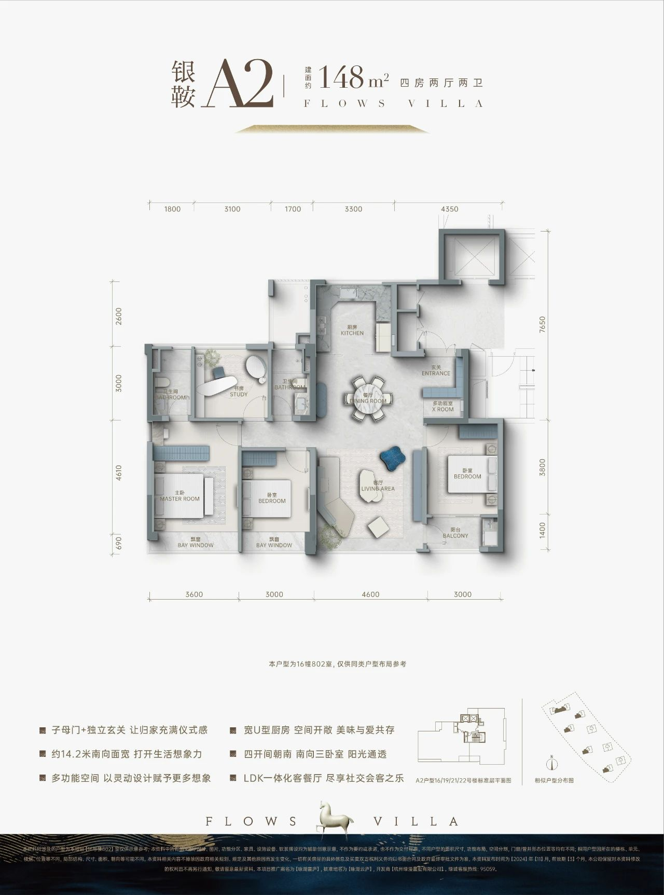
B2 · 绿城·咏湖雲庐 A1-146「青衿」（杭州滨江区·白马湖）
| 开发商 | 绿城 & 建杭 | 面积 | 约146㎡ 四房两卫 |
|---|---|---|---|
| 入市 | 事实2024-12 首开 | ||
| 面宽/开间 | 事实边厅户型，三卧朝南（新房网） | ||
| 楼高/层数 | 事实14–16F | ||
| 梯户/核心筒 | 事实两梯两户 | ||
| 赠送/得房率 | 未知未公开 | ||
亮点：子母门 + 独立玄关；一体化客餐厅 + 全景飘窗；主卧有转角观景窗。
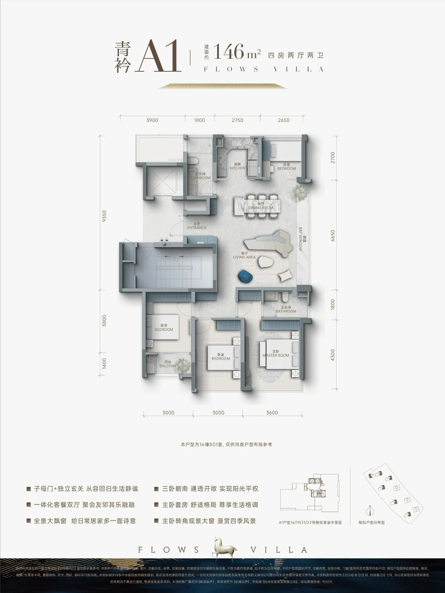
B3 · 缤曜金汇府 B-142（杭州富阳区·北环路）
| 开发商 | 杭州欣汇置业 | 面积 | 约142㎡ 四房两卫 |
|---|---|---|---|
| 入市 | 推断2023–24 | ||
| 面宽/开间 | 推断看图，南向是次卧 + 客餐厅 + 次卧 + 主卧，四开间 | ||
| 楼高/层数 | 未核实未查到层数（容积率 1.8） | ||
| 梯户/核心筒 | 未核实 | ||
| 赠送/得房率 | 事实含赠送 87%，不含赠送 80%，赠送 11.1㎡（看房网户型测评） | ||
亮点：通长 11.1㎡ 南阳台；赠送面积大。
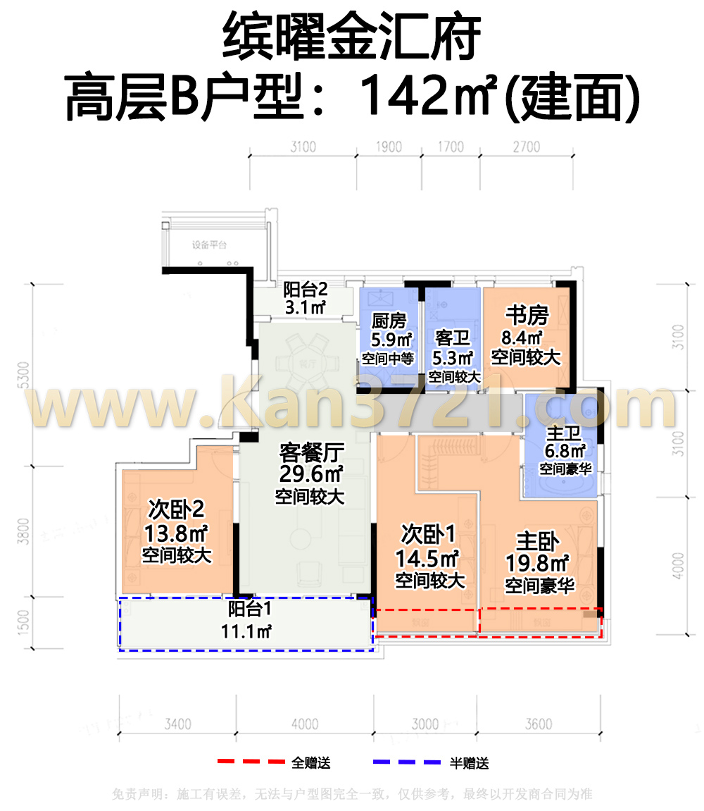
B4 · 建发·璞云 C-144（杭州滨江区·一桥南）
| 开发商 | 建发 | 面积 | 约144㎡ 四房两卫 |
|---|---|---|---|
| 入市 | 推断2024 | ||
| 面宽/开间 | 推断看图是大面宽横厅 | ||
| 楼高/层数 | 未核实全盘 9–25 层不等（看房网），这个户型在哪栋没查到 | ||
| 梯户/核心筒 | 未核实 | ||
| 赠送/得房率 | 未知未公开 | ||
亮点：层高 3.1m；横厅。
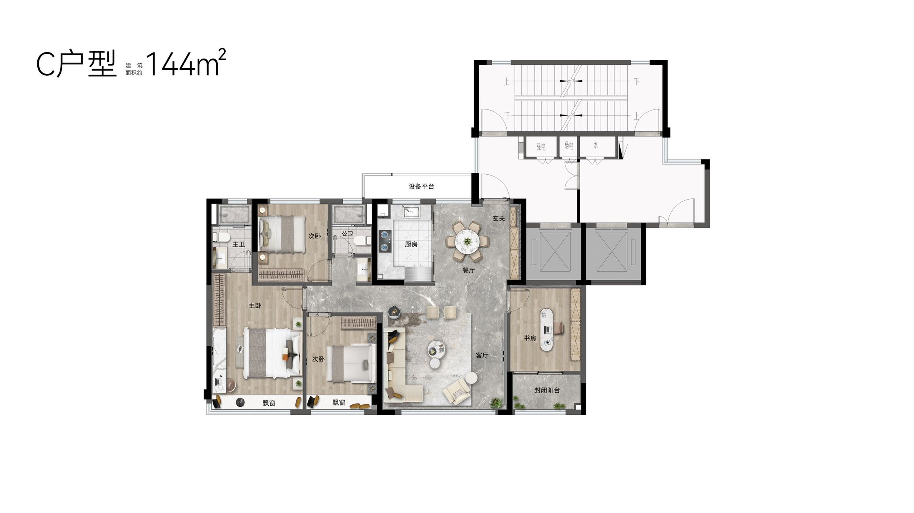
B5 · 建发·璞云 D-152（杭州滨江区·一桥南）
| 开发商 | 建发 | 面积 | 约152㎡ 四房两卫 |
|---|---|---|---|
| 入市 | 推断2024 | ||
| 面宽/开间 | 未核实图较小，开间数待核对 | ||
| 楼高/层数 | 未核实同上（9–25 层） | ||
| 梯户/核心筒 | 未核实 | ||
| 赠送/得房率 | 未知未公开 | ||
亮点：可以看作 148 段往上的延伸。
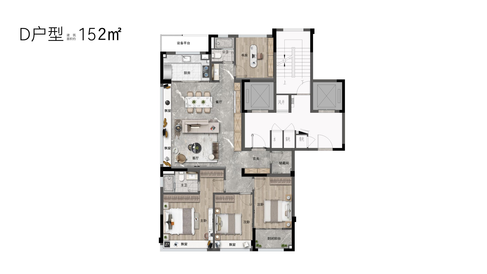
C 组 · 约170㎡ 北向看江 LDK（8 例）
杭州 170 段大多是南厅；北侧做 LDK 或南北贯通的有 C1、C4、C7、C8。北向看江是根据图纸推断的适配性，不是开发商的说法。
C1 · 绿城·咏湖雲庐 B-170「轻裘」（杭州滨江区·白马湖）
| 开发商 | 绿城 & 建杭 | 面积 | 约170㎡ 四房三卫 |
|---|---|---|---|
| 入市 | 事实2025 二开（看房网） | ||
| 面宽/开间 | 事实约 7.35m 大方厅，U 厨 + 岛台 + 客餐厅 + 飘窗做成一体（新房网） | ||
| 楼高/层数 | 事实14–16F | ||
| 梯户/核心筒 | 事实类一梯一户（两梯两户里做独立梯厅） | ||
| 赠送/得房率 | 未知未公开 | ||
亮点：推断LDK 是南北通的，北侧接岛台和厨房，转到北向看景成本低；双卧套房。

C2 · 中天海威·璟逸 B2-170（杭州拱墅区·康华路）
| 开发商 | 中天 & 海威 | 面积 | 约170㎡ 四房三卫 |
|---|---|---|---|
| 入市 | 事实2026（搜狐） | ||
| 面宽/开间 | 事实图注“LDKB 一体化”“类一梯一户” | ||
| 楼高/层数 | 事实全盘 6–15F（看房网） | ||
| 梯户/核心筒 | 事实两梯两户（搜狐） | ||
| 赠送/得房率 | 事实宣传“最高近 95%”（含赠送，不能和其他口径直接比） | ||
亮点：U 型厨房；南向面宽大；层数低。

C3 · 中天海威·璟逸 B1-170（杭州拱墅区·康华路）
| 开发商 | 中天 & 海威 | 面积 | 约170㎡ 四房三卫 |
|---|---|---|---|
| 入市 | 事实2026 | ||
| 面宽/开间 | 事实图注“LDKB 一体化” | ||
| 楼高/层数 | 事实6–15F | ||
| 梯户/核心筒 | 事实两梯两户 | ||
| 赠送/得房率 | 事实同上（宣传口径） | ||
亮点：B2 的镜像或微调版本，可以对比两版 LDK 的位置。

C4 · 滨江·叠映里 C-165「澜湾」（杭州上城区·城东新城）
| 开发商 | 滨江 & 中豪 | 面积 | 约165㎡ 四房三卫 |
|---|---|---|---|
| 入市 | 事实2024-01 首开（杭州网） | ||
| 面宽/开间 | 推断看图，北侧是大餐厨 LDK，客厅朝南 | ||
| 楼高/层数 | 事实11–15F（看房网；杭州网写 10–15 层） | ||
| 梯户/核心筒 | 事实全盘两梯两户（杭州网） | ||
| 赠送/得房率 | 未知未公开 | ||
亮点：推断最接近“北向 LDK”：餐厨放北侧，改朝北看江时阻力小。

C5 · 滨江·叠映里 D-167「启映」（杭州上城区·城东新城）
| 开发商 | 滨江 & 中豪 | 面积 | 约167㎡ 四房三卫 |
|---|---|---|---|
| 入市 | 事实2024 | ||
| 面宽/开间 | 推断看图，北侧有餐厅，客厅朝南，南北贯通 | ||
| 楼高/层数 | 事实11–15F | ||
| 梯户/核心筒 | 事实两梯两户 | ||
| 赠送/得房率 | 未知未公开 | ||
亮点：南向四开间；餐厅独立靠北。
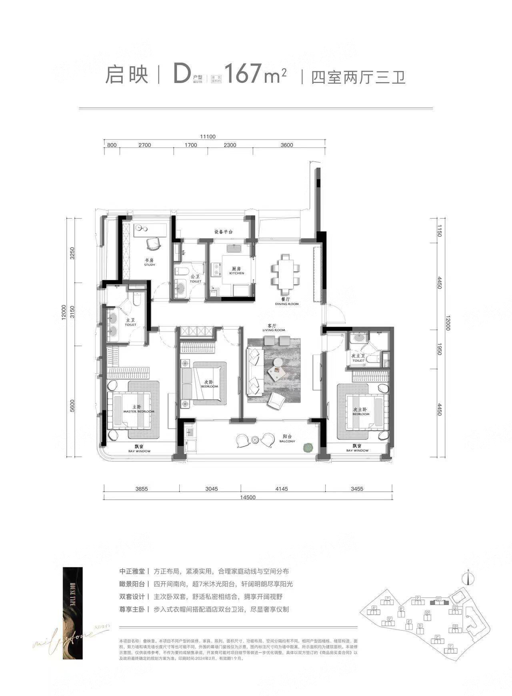
C6 · 绿城·玉海棠里 E-169「浅云」（杭州余杭区·良渚）
| 开发商 | 绿城 | 面积 | 约169㎡ 四房三卫 |
|---|---|---|---|
| 入市 | 事实2023–24 | ||
| 面宽/开间 | 推断看图，客餐厅南北贯通 | ||
| 楼高/层数 | 事实9–11 层 | ||
| 梯户/核心筒 | 事实两梯两户板式 | ||
| 赠送/得房率 | 未知未公开 | ||
亮点：小高层低区，层数和龙游 54m 以下最接近。
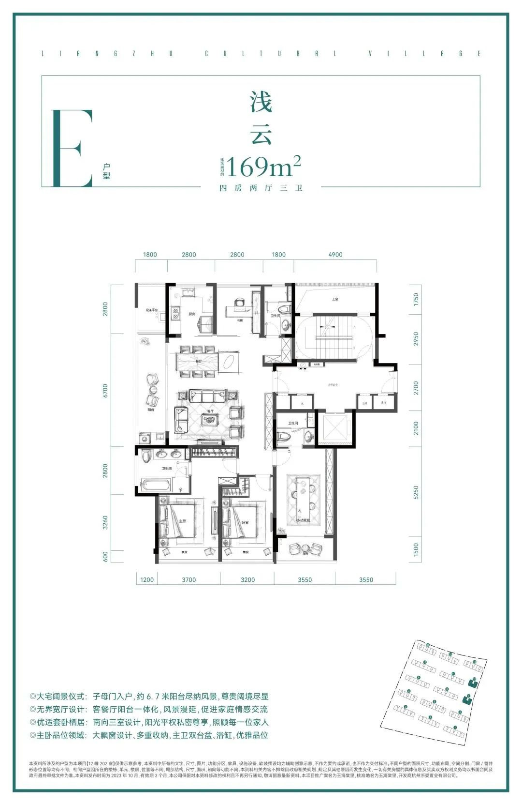
C7 · 建杭·璞御栖湖 E-169「璞樾」（杭州西湖区·双浦）
| 开发商 | 建杭 | 面积 | 约169㎡ 四房三卫 |
|---|---|---|---|
| 入市 | 推断2024–25 | ||
| 面宽/开间 | 事实图注写“LDKG 一体” | ||
| 楼高/层数 | 事实14–17F | ||
| 梯户/核心筒 | 未核实 | ||
| 赠送/得房率 | 未知未公开 | ||
亮点：推断LDK 是纵向贯通的，北侧可以开大窗。
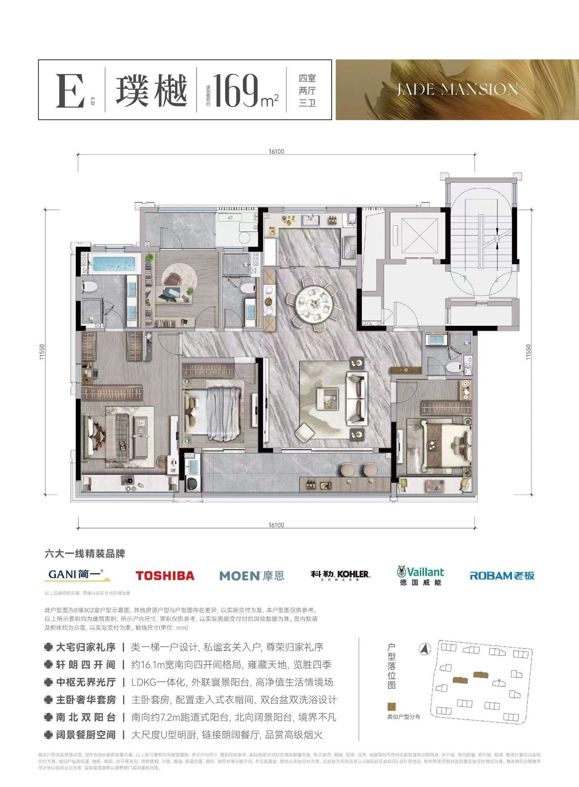
C8 · 中天西房海威·宸鹭弦歌里 175「宸鹭」（杭州拱墅区·才路拱秀路）
| 开发商 | 中天 & 西房 & 海威 | 面积 | 约175㎡ 四房三卫 |
|---|---|---|---|
| 入市 | 推断2024 | ||
| 面宽/开间 | 推断看图，北侧是圆桌餐厅，客厅居中，南北通 | ||
| 楼高/层数 | 事实14–17F（看房网） | ||
| 梯户/核心筒 | 未核实 | ||
| 赠送/得房率 | 未知未公开 | ||
亮点：约 18.1m 总面宽；北侧可做景观餐厅。
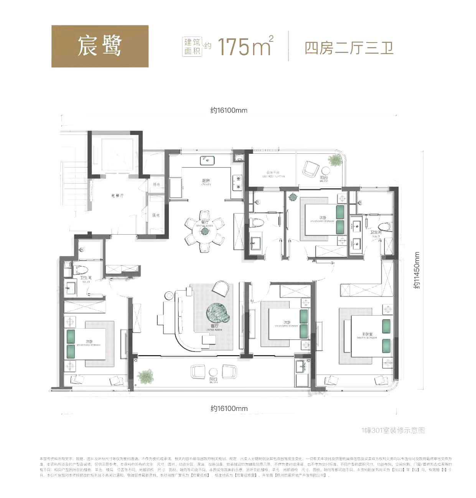
D 组 · 约180㎡ 北向看江 LDK（8 例）
180 段在 54m 以下有不少，都是 9–17F 的小高层或洋房；方厅偏北、适合北景的有 D2、D4、D8。
D1 · 万科·河颂映象府 小高层 D1-178（杭州拱墅区·申花）
| 开发商 | 万科 | 面积 | 约178㎡ 四房三卫 |
|---|---|---|---|
| 入市 | 事实2023-12 开盘（看房网） | ||
| 面宽/开间 | 事实客餐厅 47㎡，推断南北贯通 | ||
| 楼高/层数 | 事实4/5/6 幢是小高层，9–10F（看房网） | ||
| 梯户/核心筒 | 未核实 | ||
| 赠送/得房率 | 事实含赠送 89%，不含赠送 82%，赠送 11.85㎡（看房网测评） | ||
亮点：东侧紧邻西塘河，低层楼栋朝向河景，景观朝向的逻辑可以对照龙游的衢江。

D2 · 西房·宸樾恒久府 A2-178「恒品」（杭州拱墅区·长浜路）
| 开发商 | 西房 | 面积 | 约178㎡ 四房三卫 |
|---|---|---|---|
| 入市 | 推断约 2024-08 入市（凤凰网） | ||
| 面宽/开间 | 推断看图，客餐厅方厅居中偏北 | ||
| 楼高/层数 | 事实3 栋 14 层 + 7 栋 17 层（搜索摘要，出处 凤凰网） | ||
| 梯户/核心筒 | 未核实宣传“类一梯一户” | ||
| 赠送/得房率 | 未知未公开 | ||
亮点：推断方厅在中部，北侧可以开大窗，适合“北景 + 南光”。

D3 · 西房·宸樾恒久府 A1-178「恒久」（杭州拱墅区·长浜路）
| 开发商 | 西房 | 面积 | 约178㎡ 四房三卫 |
|---|---|---|---|
| 入市 | 事实2024 | ||
| 面宽/开间 | 推断客厅居中朝南 | ||
| 楼高/层数 | 事实14/17F | ||
| 梯户/核心筒 | 未核实 | ||
| 赠送/得房率 | 未知未公开 | ||
亮点：和 A2 是同一面积的两版：A1 是南厅版，A2 是北厅倾向版。

D4 · 滨江·棠月映翠 B-177「都会」（杭州西湖区·三墩）
| 开发商 | 滨江 | 面积 | 约177㎡ 四房三卫 |
|---|---|---|---|
| 入市 | 推断2024 | ||
| 面宽/开间 | 推断看图，北侧是一字长条餐厨 | ||
| 楼高/层数 | 事实9–14F（看房网） | ||
| 梯户/核心筒 | 未核实 | ||
| 赠送/得房率 | 未知未公开 | ||
亮点：容积率 1.9；北侧餐厨面宽大。

D5 · 滨江·叠映里 E-188「寰宇」（杭州上城区·城东新城）
| 开发商 | 滨江 & 中豪 | 面积 | 约188㎡ 五房三卫（略超 180） |
|---|---|---|---|
| 入市 | 事实2024 | ||
| 面宽/开间 | 推断LDK 居中，南北贯通 | ||
| 楼高/层数 | 事实11–15F | ||
| 梯户/核心筒 | 事实两梯两户 | ||
| 赠送/得房率 | 未知未公开 | ||
亮点：180 段的上限参考。

D6 · 滨江杭铁·枫揽华庭 B-185「月屿」（杭州余杭区·未来科技城）
| 开发商 | 滨江 & 杭铁 | 面积 | 约185㎡ 四房三卫 |
|---|---|---|---|
| 入市 | 事实2024 预售（杭房预许字(2024)第00338号，看房网） | ||
| 面宽/开间 | 推断看图，客餐厅居中，L 型 | ||
| 楼高/层数 | 事实8 幢 12–17F 小高层（看房网） | ||
| 梯户/核心筒 | 事实两梯两户（看房网） | ||
| 赠送/得房率 | 未核实只有“高得房率”的宣传，没有数字 | ||

D7 · 滨运·映翠湾 洋房 E-183「源邸」（杭州拱墅区·运河新城）
| 开发商 | 滨江 | 面积 | 约183㎡ 四房三卫 |
|---|---|---|---|
| 入市 | 事实2024-11 户型首发（新房网） | ||
| 面宽/开间 | 推断客餐厅居中 | ||
| 楼高/层数 | 事实洋房 6–7 层（看房网） | ||
| 梯户/核心筒 | 未核实 | ||
| 赠送/得房率 | 未知未公开 | ||
亮点：低层洋房，高度远低于 54m。
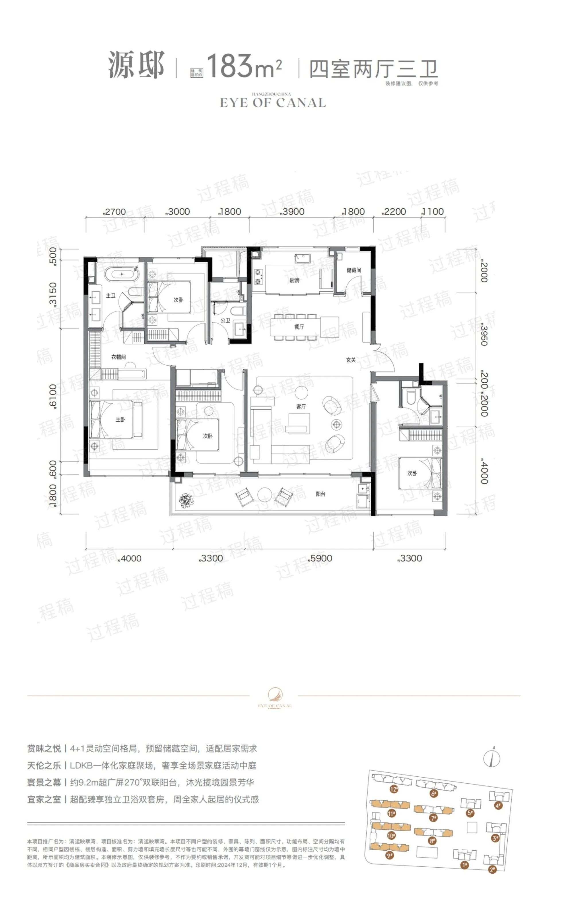
D8 · 拱宸金茂府 A-185（杭州拱墅区·拱宸桥）
| 开发商 | 金茂 | 面积 | 约185㎡ 四房三卫 |
|---|---|---|---|
| 入市 | 推断2025–26（交房 2028-04） | ||
| 面宽/开间 | 推断看图，客餐厅方厅偏北 | ||
| 楼高/层数 | 事实5–7 层（看房网） | ||
| 梯户/核心筒 | 未核实 | ||
| 赠送/得房率 | 未知未公开 | ||
亮点：低层改善；未核实不确定这是不是金茂的“院落”类产品，按图没有空中院落。
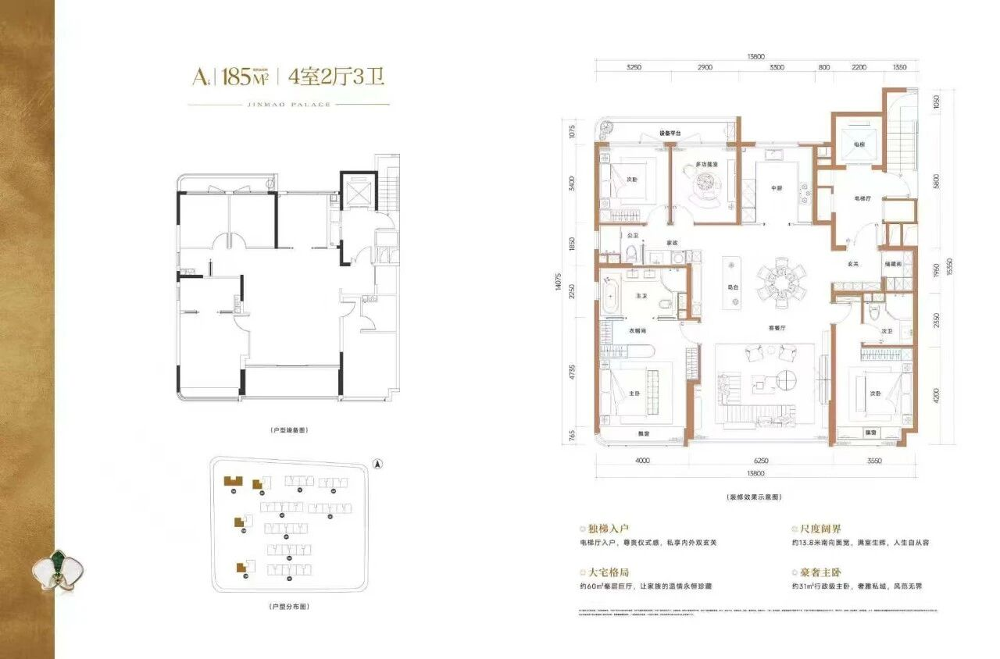
线索（没拿到图）· 剔除 · 口径
线索：值得补图的项目
| 项目 | 相关户型 | 要点（事实） | 来源 |
|---|---|---|---|
| 华润·沄璟文华轩（西湖·之江） | 145 / 178 | 14–18F，全盘两梯两户；145 四开间、横向面宽 14.4m；得房率约 87%–96%（145 三房朝南约 92%）；2025-05 首开 | 杭州网 · 吉屋 |
| 绿城·知海棠（西湖·之江） | 128 / 139 / 164 | 18 幢 16–17 层板式小高层，两梯两户；128 四开间朝南、得房率 89%；139 南向面宽 13m；全盘得房率 85%–90% | 搜狐焦点 2026-08 |
| 绿城·丽香庭（萧山·钱江世纪城） | 148 / 170 / 176 / 185 | 8 幢高层，层数未知；2025 年中入市 | 杭州网 |
| 联发保利·臻和雅颂（拱墅） | 135 / 149 | 11–17F，两梯两户；135 是三开间（2022 年拿地，偏旧） | 看房网 |
剔除（不满足 54m 以下或其他条件）
口径说明
- 入市时间标“推断”的，是按看房网收录顺序和交房年份推的。
- “北向看江适配”都是看图判断（LDK 是否靠北或南北贯通），杭州这些项目本身大多不是北向江景盘。
- 第四代 / 空中院落：28 例按图都没有逐层院落或空中花园。
- 图都来自杭州看房网转载的开发商物料，带水印；已经删掉模糊和没标尺寸的过程稿。